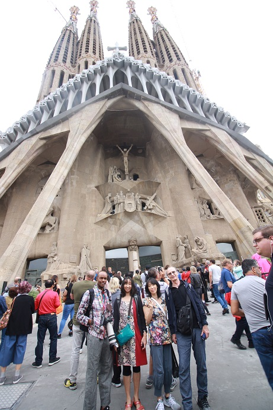

| 1 | : | John y yo fuimos a un restaurante en el sótano del hotel a las 7:30 en punto cuando comenzaron a servir el desayuno en el hotel. |
| 2 | : | Fue la primera vez que desayunamos en un hotel en España. |
| 3 | : | Había muchos tipos de panes y quesos y estaban deliciosos, por eso hubiéramos querido comer más despacio. |
| 4 | : | Íbamos a encontrarnos con Kanako y Richard a las 8:00 así que rápidamente volvimos a nuestra habitación y fuimos al vestíbulo con nuestras mochilas. |
| 5 | : | Lamentablemente estaba lloviendo ese día. |
| 6 | : | Cogimos un taxi enfrente del hotel y fuimos a la Sagrada Familia. |
| 7 | : | Había mucha gente alrededor de la Sagrada Familia. |
| 8 | : | Pudimos entrar entre las 9:45 y las 10:00 por nuestro billete. |
| 9 | : | Teníamos tiempo y la lluvia se hacía más fuerte, así que fuimos a un café que estaba cerca. |
| 10 | : | Estaba buscando nuestro billete impreso, pero no podía encontrarlo. |
| 11 | : | La noche anterior se lo había dado a John y lo había dejado en el hotel. |
| 12 | : | Yo me preocupé mucho, pero tenía una imagen del billete en mi teléfono inteligente y decidimos usarla. |
| 13 | : | Cuando entramos mostré la imagen del billete en la entrada. |
| 14 | : | Pudimos entrar sin problema. |
| 15 | : | Luego, pasamos el control de seguridad para entrar y era más estricto que en otros museos, como en el aeropuerto. |
| 16 | : | Entonces solo una persona del grupo podía ir a la oficina para recibir las audioguías. |
| 17 | : | Yo tenía que ir porque el billete estaba en mi teléfono inteligente. |
| 18 | : | Iba a decir dos en inglés y dos en japonés, por favor, en español, pero el empleado hablaba inglés y yo respondí en inglés también. |
| 19 | : | Recibí dos aparatos en inglés y dos en japonés. |
| 20 | : | La vista de la catedral desde la distancia era maravillosa, pero la vista de cerca era mejor. |
| 21 | : | Cada escultura era fantástica. |
| 22 | : | Finalmente pudimos entrar. |
| 23 | : | De repente exclamamos "Wow". |
| 24 | : | Era completamente diferente a las catedrales que habíamos visto. |
| 25 | : | A pesar de la lluvia afuera, había suave luz del sol desde las vidrieras y los grandes pilares eran como árboles grandes. |
| 26 | : | Era un espacio cómodo como en el bosque. |
| 27 | : | La basílica de la Sagrada Familia, por supuesto, es una obra maestra de Gaudí y se ha registrado como Patrimonio de la Humanidad. |
| 28 | : | La construcción comenzó en 1882 y en 1883 Gaudí la asumió del primer arquitecto Francisco de Paula del Villar. |
| 29 | : | Gaudí era un católico religioso y pasó su vida construyendo esta catedral. |
| 30 | : | Ahora todavía la están construyendo para su finalización en 2026, 100 años después de la muerte de Gaudí. |
| 31 | : | Desafortunadamente no pudimos subir a la torre a causa de la lluvia, aunque habíamos reservado. |
| 32 | : | Pero pudimos tener una tarea para volver. |
| 33 | : | Siempre yo escucho audioguía no en serio, pero allí la escuchaba en serio y repetidamente. |
| 34 | : | Era una catedral tan maravillosa. |
| 35 | : | Había una tienda de recuerdos y compramos calendarios y libros de Gaudí. |
| 36 | : | Disfrutamos el tour de La Sagrada Familia y nos dirigimos a Casa Milà, a pie, aunque entre los dos lugares hay dos estaciones de metro. |
| 37 | : | Estaba lloviendo un poco pero no necesitamos el paraguas. |
| 38 | : | En el camino entramos a un restaurante para almorzar. |
| 39 | : | Vimos el menú y era un poco caro, así que pedimos dos platos de paella para los cuatro. |
| 40 | : | La cantidad no era suficiente, pero estaba muy rica. |
| 41 | : | Había una pareja de alemanes sentados a nuestro lado y ellos se quejaron del mal servicio y de los altos precios. |
| 42 | : | Ninguno de nosotros se quejó. |
| 43 | : | Pensé que nuestro grupo era el mejor. |
| 44 | : | Salimos del restaurante y llegamos a Casa Milà en 10 minutos. |
| 45 | : | La figura del edificio era inusual y mucha gente estaba tomando fotos, así que la encontramos pronto. |
| 46 | : | Casa Milà fue diseñada cuando Gaudí tenía 54 años y fue construida entre 1906 y 1910 como la casa del empresario Pele Milà y su esposa. |
| 47 | : | Fue registrada como Patrimonio de la Humanidad en 1984. |
| 48 | : | El edificio no tiene partes rectas, y tiene una atmósfera de dunas u ondas de lava. |
| 49 | : | Todavía es usada como apartamento. |
| 50 | : | Pagamos €25.00 cada uno y entramos. |
| 51 | : | Era caro, pero la mayoría de la entrada la utilizan para donarla a organizaciones de caridad. |
| 52 | : | Primero, la ruta era subir a la azotea en el ascensor. |
| 53 | : | Había una larga cola para subir y esperamos en la cola un rato. |
| 54 | : | Subimos a la azotea y era un lugar bonito, como un parque temático. |
| 55 | : | Había subidas y bajadas y era como un parque deportivo. |
| 56 | : | El paisaje era maravilloso y pudimos ver bien la Sagrada Familia. |
| 57 | : | Desde allí fuimos a los pisos de abajo, gradualmente. |
| 58 | : | Pudimos ver los documentos como planos y su explicación, documentales y los modelos de obra de Gaudí y también pudimos ver una parte del apartamento. |
| 59 | : | Luego quisimos ir al Hospital de Sant Pau, pero no teníamos tiempo. |
| 60 | : | Decidimos verlo, un poco, en el camino a la estación Alfons X, en taxi. |
| 61 | : | El taxista era muy agradable y aparcó enfrente del hospital porque era un buen lugar para tomar fotos y nos esperó mientras las tomábamos. |
| 62 | : | Era un hospital, pero el frente del edificio era como una iglesia. |
| 63 | : | El arquitecto Montaner comenzó la construcción del hospital y después de su muerte, su hijo la completó en 1930. |
| 64 | : | Cuarenta y ocho edificios fueron construidos en el vasto sitio y muchas partes están decoradas con vidrios y azulejos y se ha registrado como Patrimonio de la Humanidad. |
| 65 | : | Lamentablemente no pudimos entrar, pero quisiera volver algún día. |
| 66 | : | Desde allí subimos la cuesta en taxi y llegamos a la estación Alfons X, en casi 5 minutos. |
| 67 | : | El autobús de enlace, ya estaba esperando a los clientes allí. |
| 68 | : | Mostré el billete en mi teléfono inteligente y subimos al autobús. |
| 69 | : | En el mapa de la guía, la estación no estaba lejos del parque Güell. |
| 70 | : | Había pensado por qué necesitaríamos un autobús de enlace, pero después de subir al autobús pudimos entenderlo. |
| 71 | : | Teníamos que subir una cuesta empinada para ir al parque. |
| 72 | : | El autobús subió la cuesta y llegó al parque Güell en unos 10 minutos. |
| 73 | : | El Parque Güell se ha registrado como Patrimonio de la Humanidad. |
| 74 | : | El Conde Güell y Gaudí quisieron construir 60 casas con la vista de Barcelona rodeadas de naturaleza y arte. |
| 75 | : | Sin embargo en ese momento la gente no pudo entender su valor y solamente dos casas fueron vendidas. |
| 76 | : | Güell y Gaudí compraron las dos casas. |
| 77 | : | La construcción fue interrumpida a causa de problemas financieros y luego fue hecho un parque. |
| 78 | : | Teníamos un poco de tiempo hasta las 18:00 para nuestra reserva, así que dimos un paseo por el área gratuita. |
| 79 | : | Era un lugar fresco rodeado de muchos árboles con la vista de Barcelona. |
| 80 | : | A la hora de entrar, entramos al área de pago. |
| 81 | : | Había unas partes como un parque temático, había visto las fotos en el libro guía pero la mayor parte era un paseo rodeado de muchos árboles, igual al área gratuita. |
| 82 | : | Regresamos al área gratuita y fuimos a la casa de Gaudí que se llama Casa Museo Gaudí en el área. |
| 83 | : | Costaba €5.50 por persona. |
| 84 | : | Muchos de sus diseños son extraños, pero su propia casa era muy simple. |
| 85 | : | Había una cruz en el dormitorio y también había una habitación con un altar. |
| 86 | : | Sabía que él era un católico piadoso. |
| 87 | : | Iban a cerrar el museo a las 20:00 y salimos de allí 5 minutos antes. |
| 88 | : | Afuera todavía brillaba un poco la luz del sol. |
| 89 | : | Tomamos el autobús enlace y volvimos a la estación del metro. |
| 90 | : | Desde allí fuimos al hospital de Sant Pau otra vez a pie. |
| 91 | : | En el camino una mujer con su bebé nos enseñó la ruta. |
| 92 | : | Ella podía hablar inglés. |
| 93 | : | Porque ella era una profesora nos dijo eso orgullosamente. |
| 94 | : | La calle estaba en bajada y llegamos al hospital en unos 15 minutos. |
| 95 | : | El hospital estaba iluminado y la impresión era diferente a lo que habíamos visto durante el día. |
| 96 | : | Después de tomar unas fotos, nos dirigimos al hotel en taxi. |
| 97 | : | Sin embargo la calle frente al hotel estaba cerrada y tuvimos que bajar del taxi un poco antes de llegar al hotel. |
| 98 | : | En la calle principal, frente al hotel, había un gran festival y muchas personas disfrazadas marchaban haciendo fuegos artificiales y quemando cohetes. |
| 99 | : | Finalmente llegamos al hotel, pasando en la multitud. |
| 100 | : | Le preguntamos al recepcionista del hotel sobre el restaurante recomendado. |
| 101 | : | El hombre gordito felizmente nos recomendó un restaurante. |
| 102 | : | También nos dio un cupón de bebidas. |
| 103 | : | Decidimos ir al restaurante. |
| 104 | : | El restaurante estaba muy cerca del hotel, pero tuvimos que cruzar la calle principal frente al hotel. |
| 105 | : | Atravesamos las brechas de la marcha, entre las chispas y gritando, llegamos al restaurante de alguna manera. |
| 106 | : | Comí un plato de cordero en el restaurante. |
| 107 | : | Fue el primero o segundo plato de cordero más delicioso que he comido. |
| 108 | : | Regresamos al hotel y le dijimos eso al recepcionista y él estaba muy contento. |
| 109 | : | Fui a la cama pronto ese día. |
| 110 | : | Pero John tendría que devolverle la tarjeta SD a Kanako al día siguiente, por eso se quedó levantado hasta tarde para transferir las fotos. |
{kind=link}
{kind=link}
{kind=link}
{kind=link}
{kind=link}
{kind=link}
{kind=link}
{kind=link}
{kind=link}
{kind=link}